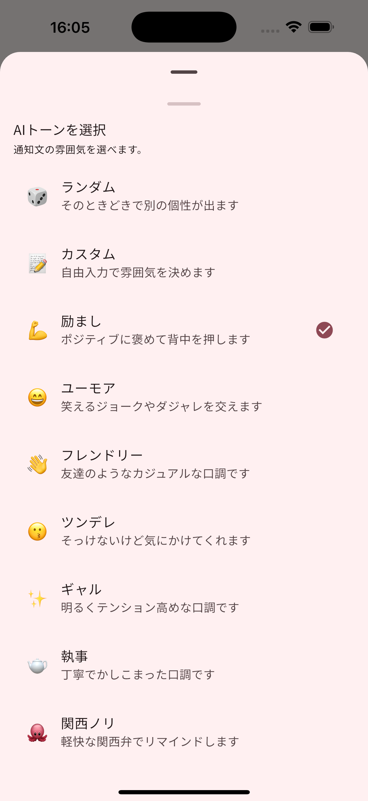

通知が楽しみになる体験を
単なるアラームではなく、「行動したくなる」ために設計された機能の数々をご紹介します。
AIがメッセージを自動作成
「薬を飲む」「資料提出」など、予定の内容からAIがメッセージを生成。ただの通知が、あなたを勇気づける一言や、クスッと笑えるメッセージに変わります。
予定の内容から、AIがあなたを勇気づける専用のメッセージを自動的に考えてくれます。
話しかけるだけでパッと登録
「15時に薬を飲む」と声に出すだけ。AIが内容と時刻を解析して、瞬時にリマインダーをセット。キーボードを打つ手間すら省けます。
「15時に薬を飲む」と話しかけるだけ。AIが解析して瞬時にリマインダーをセットします。
多彩なトーン設定
「励まし」「ユーモア」「執事」「軍曹」「ツンデレ」など、複数のトーンから選択可能。気分に合わせて話し方を変えることで、タスク管理が続きます。
「執事」や「ツンデレ」など多彩なAIトーンを選択可能。日々のタスク管理が楽しくなります。

確実なリマインド機能
事前・事後リマインドや、スヌーズ機能を組み合わせることで、「通知は見たけど後回しにして忘れる」を防ぎ、確実に実行をサポートします。
事前・事後の通知設定やスヌーズ機能により、「後回しにして忘れる」ことを確実に防ぎます。
こんなメッセージが届きます
Premium
より深く、もっと便利に。Tificat プレミアムプランで制限を解除。
広告の完全非表示
予定中タスクを無制限に作成可能
事前・事後リマインドの自由な設定
さあ、新しい
リマインダー体験を
AIがあなたのために考える、ちょっと心地よい通知をお試しください。